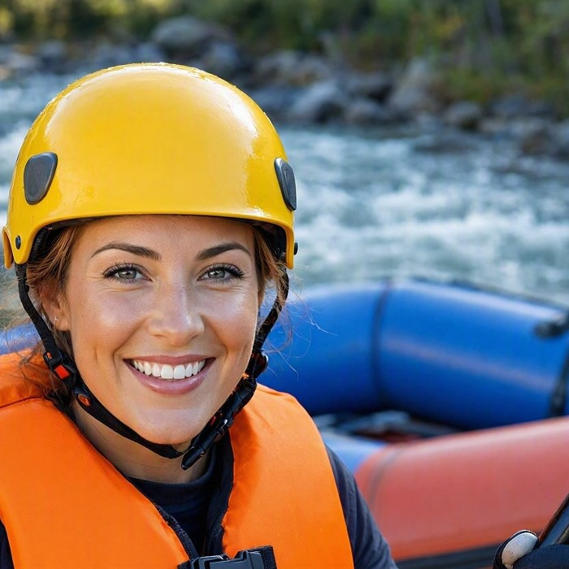

Our mission is to provide thrilling, safe, andd unforgettable white water rafting experiences for adventures of all skill levels. Founded by passionate river guides, we aim to connect people with the raw beauty of nature while fostering a spirit of adventure and teamwork on every river we run.